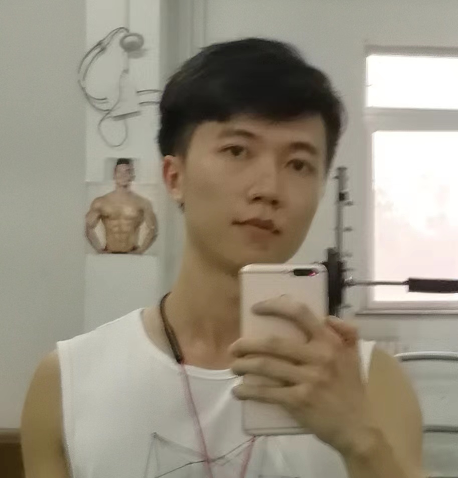
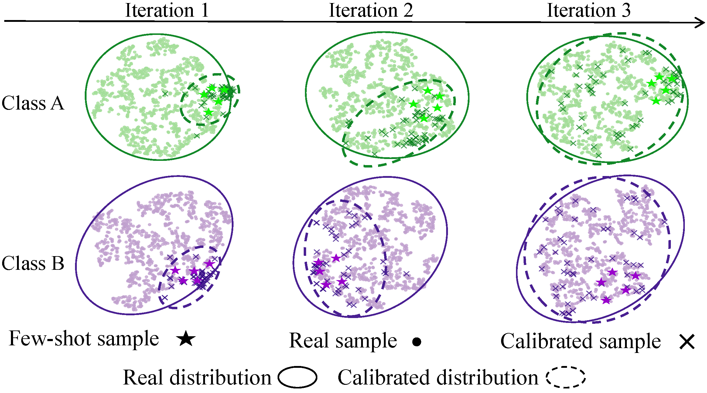
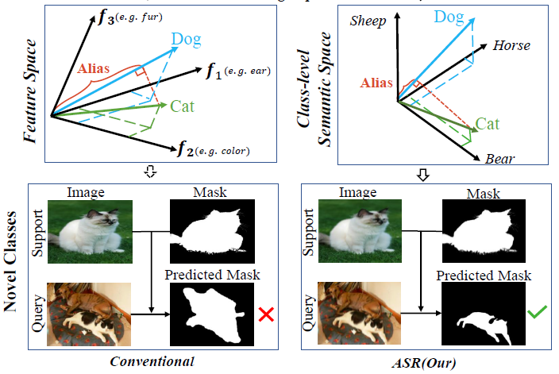
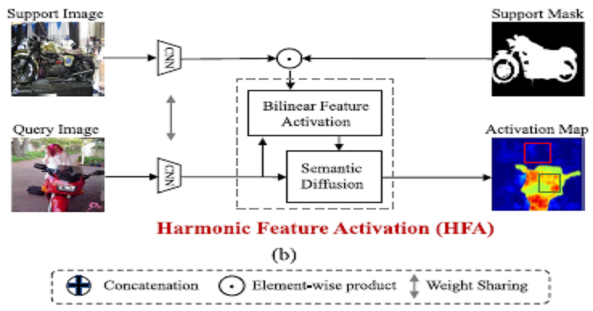
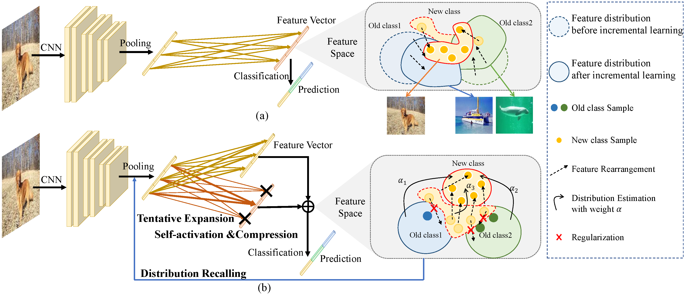

Binghao LiuPh.D. candidateRoom 332, Academy 2 Building
|
 |
I am a Ph.D. candidate of PRISDL in the School of Electronic, Electrical and Communication Engineering, University of Chinese Academy of Sciences , advised by Prof. Qixiang Ye. During my master student period, I was advised by Prof. Jianbin Jiao and Qixiang Ye. I got a B.E. degree in Electronic Information School at Wuhan University, Wuhan in June 2018.
My research interests include computer vision and representation learning. Recently, I am commited to few-shot learning, semantic segmentation and continual learning.
|  | Binghao Liu, Boyu Yang, Lingxi Xie, Ren Wang, Qi Tian, Qixiang Ye
Learnable Distribution Calibration for Few-Shot Class-Incremental Learning Transactions on Pattern Analysis and Machine Intelligence (TPAMI 2023) [Paper] [Code] |
|  | Binghao Liu, Yao Ding, Jianbin Jiao, Xiangyang Ji, Qixiang Ye
Anti-aliasing Semantic Reconstruction for Few-Shot Semantic Segmentation 2021 IEEE/CVF Conference on Computer Vision and Pattern Recognition (CVPR 2021) [Paper] [Code] |
|  | Binghao Liu, Jianbin jiao, Qixiang Ye
Harmonic Feature Activation for Few-shot Semantic Segmentation IEEE Transactions on Image Processing (TIP 2021) [Paper] [Code] |
|  | Boyu Yang, Mingbao Lin, Yunxiao Zhang, Binghao Liu, Xiaodan Liang, Rongrong Ji, Qixiang Ye
Dynamic Support Network for Few-Shot Incremental Learning Transactions on Pattern Analysis and Machine Intelligence (TPAMI 2022) |